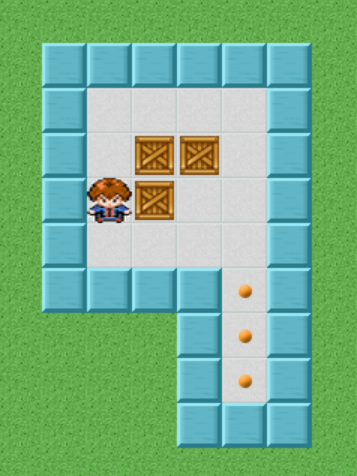

In this task you will play a version of the game Sokoban.
Sokoban is japanese for 'warehouse keeper'.
You have to push the boxes to their proper locations, without importance to the order of the boxes.
Your goal will be to find what is the minimum number of moves to win the game, given a starting position.
The objective of SOKOBAN is to move the boxes in the warehouse into their assigned storage areas.
You are the warehouse foreman in control of Wally, a mechanical warehouseman.
You must direct Wally to determine the quickest method of pushing all of the boxes onto their diamond storage areas.
Use the arrow keys to move Wally.
Wally can only push one box at a time, he may not push two or more boxes on the same push.
You may use the UNDO feature to undo your immediately preceding move,
The RESET the feature will restore the positions of the boxes and Wally to where they were at the start of the level.

You will have the opportunity to get a bonus based on your performance - if all of your solutions will be in the right range of corectness, you get a bonus of 2.5$.